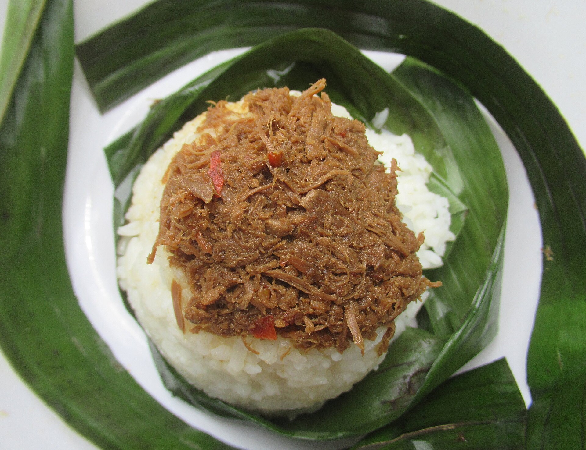

1300s
Islam reaches the south
Islam reached the southern Philippines in the 1300s, carried by traders and teachers across the seas.

The Bangsamoro · 1380 to today
Centuries of faith, trade and resilience, told one chapter at a time.
1300s
Islam reached the southern Philippines in the 1300s, carried by traders and teachers across the seas.

1380
Sheikh Karimul Makhdum built a mosque in Simunul, Tawi-Tawi, in 1380. It is considered the oldest mosque in the Philippines.

The sultanates
Strong sultanates such as Maguindanao and the Maranao confederation of Lanao grew in the region. Many of these communities resisted colonial rule for centuries and kept their own laws, arts and trade networks.
Maranao okir carving, Maguindanao inaul weaving and Yakan cloth come from this long history.
1989
The Autonomous Region in Muslim Mindanao was created in 1989.
2014
After long peace talks, the Comprehensive Agreement on the Bangsamoro was signed in 2014.
2019
The Bangsamoro Organic Law was ratified by voters in 2019. That led to the creation of BARMM, which governs its own affairs within the Philippines.
Living traditions

Festival dates change each year, so check with local tourism offices before you go.
Read further
This independent student project introduces the region; confirm access and schedules with local tourism offices.
Destination photographs are sourced through Wikipedia and Wikimedia. View photograph sources and attribution links.